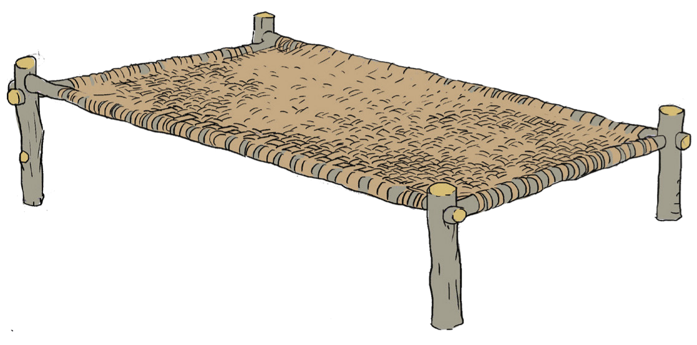

kuhifadhia maji na nafaka. Aidha, vyombo hivi vilitumika katika kubadilishana ili kupata bidhaa zilizokosekana katika jamii ya wafinyanzi.

Jadili namna ya kuendeleza sayansi na teknolojia ya ufinyanzi katika jamii zetu kwa maendeleo ya sasa.
Sayansi na teknolojia asilia ya ususi
Sayansi na teknolojia ya ususi ilifanywa kwa kutumia malighafi kama vile ukindu, mianzi, matete, miwaa na majani ya minazi na michikichi. Ususi ulifanywa kwa kusuka kitu. Mfano, makuti ya minazi au chikichi yalisukwa kwa kutumia mikono au ukindu. Ukindu ulitengenezwa kutokana na chale za minazi au michikichi. Sayansi na teknolojia ya ususi ilifanyika kwa kupishanisha kindu, mianzi, matete au majani ya minazi na michikichi kwa mpangilio maalumu ili kupata umbo fulani. Kielelezo namba 19, kinawasilisha mfano wa kitanda kilichosukwa kwa makuti na kamba.

Kielelezo namba 19: Kitanda kilichosukwa kwa kamba za ukili na makuti
Sayansi na teknolojia ya ususi kwa kutumia mianzi ilifanywa kwa kutumia mianzi ambayo ilivunwa na kuchunwa kitaalamu,